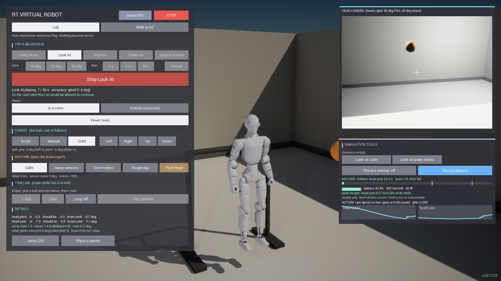
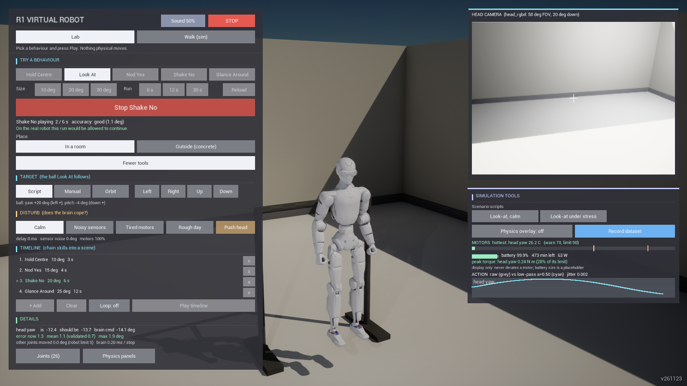
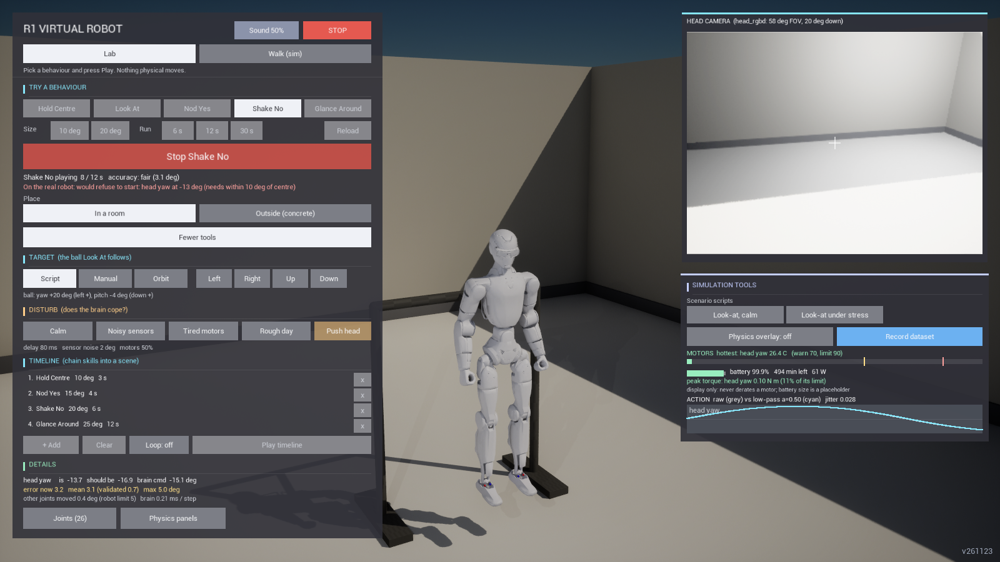
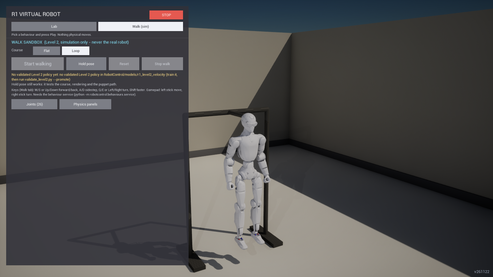
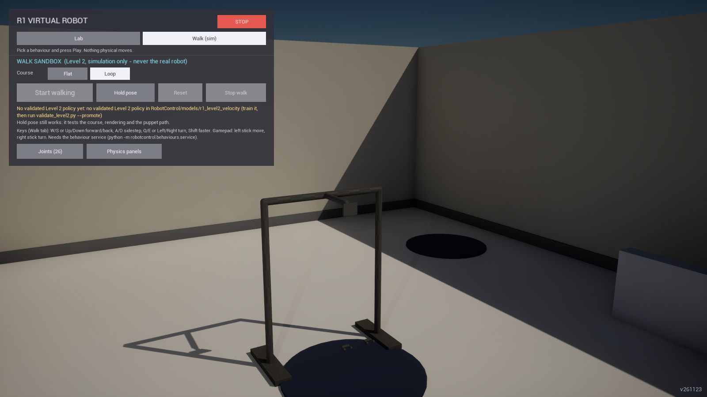

Unreal app becomes the scenario lab (simulation only)
2026-11-22. The web app owns debugging, training and the real robot on its stand. The Unreal app now hatches the
brains the web app trained and tests them in scenarios: a look-at ball (Script / Manual / Orbit), a head camera,
pushes, delay, noise, weak motors and skill timelines. The brains run inside Unreal through NNE (about 0.1 ms per
step) under the same contract and SHA-256 validation gate as the robot. Captured with R1TwinEditor
Development, -game -PanelCapture (scripted scenario), 1600×900. HUD anchors: Brain, Target, Disturb,
STOP and Details (R1BehaviourPanel.h).
Before
HEAD: seven tabs (Behaviours, Robustness, Walk, Health, Motions, Setup, Help), voice, and real-robot Check / Monitor / Move REAL robot. These duplicated the web app.Intermediate (earlier today): a Trained skills row and Train buttons on the old panel. Superseded: training now lives in the web app only.
After
Look At follows the orbiting ball. The head camera (top right) keeps the ball on the vertical centre line; it sits high because the camera is tilted 20° down. Result: head pitch −8.9° against a reference of −9.1°, mean error 1.4° on a moving target (validated 0.8° on step targets), and the real robot's safety envelope would let the run continue.

Push: a real MuJoCo torque on head_yaw_link (1.2 Nm, more than the 0.86 Nm yaw motor), applied for 0.2 s.

Timeline: Hold Centre, then Nod Yes, then Shake No (shown: step 3/4, error 1.1° against a validated 0.7°), then Glance Around.

Disturbed: 80 ms delay, 2° sensor noise and a 50 % motor. The mean error climbs to 3.1° (amber). The script restarted while the head was at −12°, so the card shows the real runner would have refused to start.

Joints (26): the right column swaps the camera for the joint matrix.

Walk (sim) is kept: the Level 2 sandbox, stepped by the behaviour service.